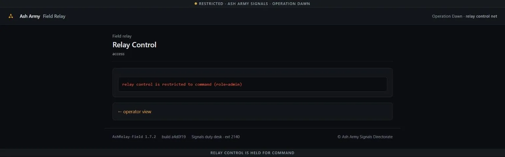

01Start point: look at the session cookie.
- What I did: GET /; decode the Set-Cookie.
- Result: session = <hexpayload>.<40-hex-sig>. The hex decodes to `user=guest&role=operator`; the 40-hex trailer is a SHA-1. /relay returns 403 for operator and says command relay control needs role=admin.
- Thinking: a 40-hex (SHA-1) tag over `user=guest&role=operator`. It is not plain SHA-1 of the payload and not any guessable HMAC key, so it is a secret-PREFIX MAC: sig = SHA1(secret || "user=guest&role=operator"). That construction is the textbook hash length-extension setup.
02Escalate: SHA-1 hash length extension to forge role=admin.
- What I did: without knowing the secret, append "&role=admin" to the signed message using a length-extension attack, brute-forcing the unknown secret length 0..64. The payload is hex(original || glue-padding || "&role=admin"); the new SHA-1 is computed by resuming the hash state from the known digest. (pure-Python SHA-1 in solve.py.) The query parser takes the LAST `role`, so `operator` -> `admin`.
- Result: secret length = 16 bytes. The forged cookie opened /relay with HTTP 200 (Command Relay Control). Forged payload bytes: `user=guest&role=operator` + 0x80 + zero pad + length(0x140 bits) + `&role=admin`.
03Enumerate: the admin relay page.
- What I did: read /relay with the forged cookie.
- Result: an internal node map (node1-3.relay.internal), a provisioning service at http://127.0.0.1:9091/order, and a node-status probe: GET /relay/probe?target=<node-url>.
- Thinking: the "standing order on a node the console only reaches from the inside" is the provisioning service. The probe is a server-side fetcher -> SSRF to 127.0.0.1:9091.
04Exploit: SSRF to the internal provisioning node, bypassing the IP filter.
- What I did: probe target=http://127.0.0.1:9091/order -> "relay target refused: 127.0.0.1". The filter also refuses `localhost`, `0.0.0.0`, `[::1]`. I re-encoded 127.0.0.1 as its 32-bit integer: 2130706433.
- Result: target=http://2130706433:9091/order sailed past the string blacklist (the socket layer parses the integer back to 127.0.0.1), and the probe returned the standing order: CSCTF{8UPCyUsVYt2lA2gnNVwD2Wqd} Live reproduction against a freshly-fetched instance (per-instance flag differs from the documented one above): ```text $ python -I solve.py http://w02.ctf.chronos-security.ro:33806 [*] payload: b'user=guest&role=operator' sig: 099e7a979ccf933c0965b0287bfef720f80bc3d5 [+] secret length = 16; /relay unlocked (admin) [+] flag: CSCTF{ChcexQIutFR2z7RLSlutlXjk} ``` Live-instance evidence — the relay control gate the chain defeats. The console issues an `HttpOnly` operator session, so the forged `role=admin` cookie must be replayed by a raw HTTP client (solve.py above); a browser cannot overwrite an `HttpOnly` cookie, so the in-browser view shows the live command-only gate that the SHA-1 length-extension forgery bypasses before the decimal-encoded SSRF pulls the standing order:
